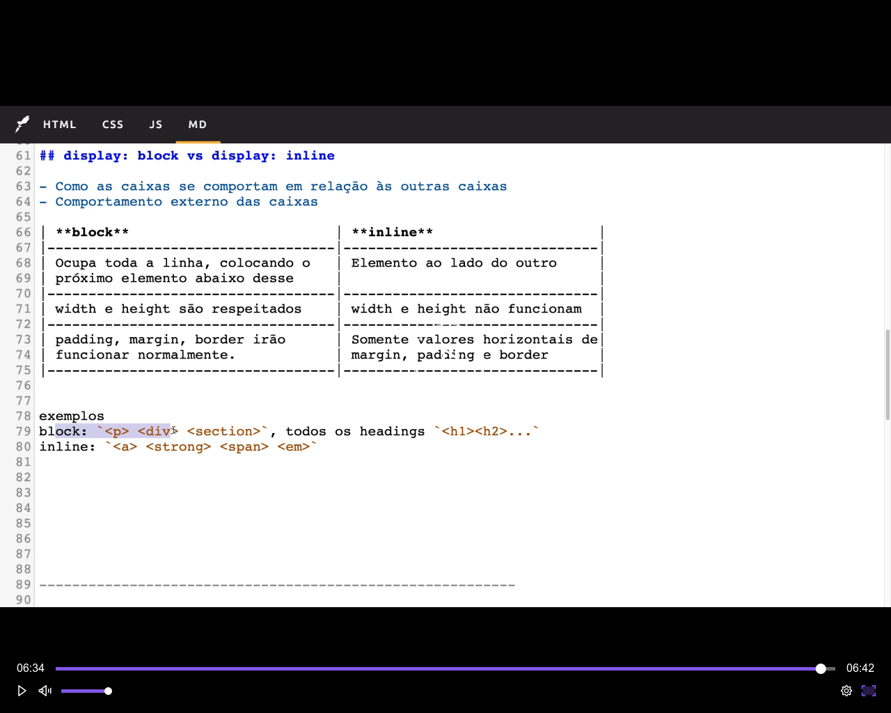

* box-sizing - Responsável pelo cálculo do tamanho total da nossa caixa
* Display Block - Ocupa toda a linha, colocando o próximo elemento abaixo desse
* Display Inline - Os elementos ficam ao lado do outro e não empurram outros elementos para baixo

* margin - Espaços entre elementos
* padding - Preenchimento interno de uma caixa
* border/outline - são as bordas da caixa
O outline é muito semelhante ao border, mas difere em 4 sentidos:
- Não modifica o tamanho da caixa, pois não é parte do Box Model
- Poderá ser diferente de retangular
- Não permite ajuste individuais
- Mais usado pelo user agent para acessibilidade